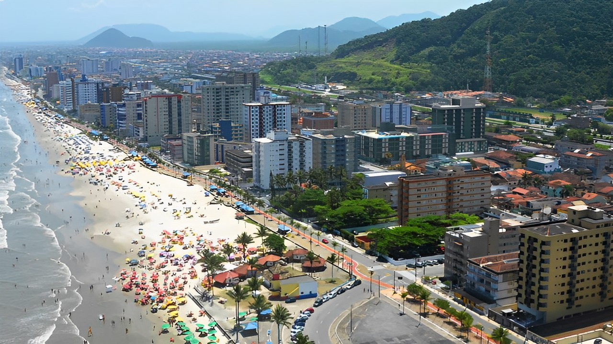

O Centro de Mongaguá é o coração da cidade de Mongaguá, localizada no estado de São Paulo, Brasil. É uma área movimentada e comercial, com diversas opções de lojas, restaurantes, bares e serviços. O centro da cidade também é conhecido por suas praças e espaços públicos, como a Praça Dudu Samba, que é um ponto de encontro popular para moradores e visitantes. Além disso, o centro de Mongaguá é uma importante área turística, com diversas opções de hospedagem e acesso às praias da região.
 © Pedro Henrique - 2023